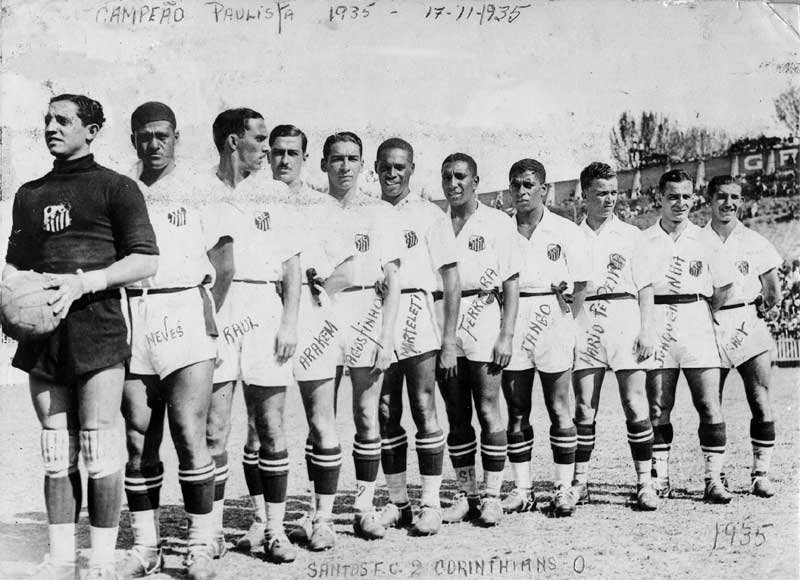
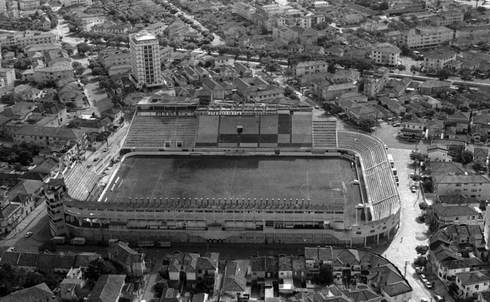

Sobre o Santos
30/04/2025, by Levi Leal
Criação do Santos
O Santos Futebol Clube, mais conhecido apenas como Santos, é um clube brasileiro fundado em 14 de abril de 1912, com sede na cidade homônima. Inicialmente suas cores seriam o branco, azul e dourado, mas um ano após a sua fundação, ficou decidido que as cores do clube passariam a ser branco e preto.

Vila Belmiro
Antes de ter seu campo, o Santos chegou a mandar seus jogos em três locais diferentes: Campo da Avenida Ana Costa, Campo da Avenida Conselheiro Nébias e o Campo do Clubes dos Ingleses. Os treinos eram feitos em um campo distinto, localizado no Bairro do Macuco. Em 1915 os dirigentes passaram a procurar terrenos na cidade. Em 31 de maio de 1916, uma assembleia geral aprovou a compra de uma área de 16 650 metros quadrados, no bairro da Vila Belmiro, aprovado pelo presidente do clube, Agnello Cícero de Oliveira. A compra do terreno foi feita em 16 de junho de 1916.

Titulos conquistados
- 2 Copas Intercontinentais
- 3 CONMEBOL Libertadores
- 1 Recopa Sul-Americana
- 1 Copa CONMEBOL
- 8 Campeonatos Brasileiros
- 1 Copa do Brasil
- 22 Campeonatos Paulistas
- 5 Torneios Rio-São Paulo
Santos campeão do mundo
O Santos Futebol Clube possui duas conquistas consideradas títulos mundiais por seus torcedores e por muitos historiadores do futebol: os títulos da Copa Intercontinental de 1962 e 1963. Essas conquistas aconteceram durante a era de ouro do clube, com Pelé como grande destaque.